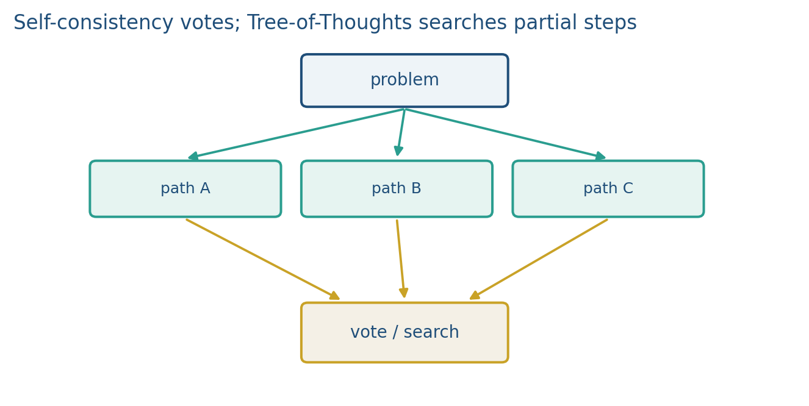

13.2 Self-Consistency and Tree-of-Thoughts
Sample several traces and vote. Search a tree of partial thoughts when one path is not enough.
These notes match the lecture slides. Use (slides) on the course hub for the deck.
One chain is a sample, not a proof. Self-consistency asks for several traces and votes. Tree-of-thoughts (ToT) searches among partial plans instead of committing to a single left-to-right story.
1. Majority vote over traces
Sample independent CoT traces (temperature ). Parse an answer from each. Take the majority. The hope: wrong paths disagree; right paths land on the same number.

This is test-time compute. You pay forwards. Report and the parser (last integer, boxed span, regex). Voting on the answer, not on the wording of the steps, is the usual rule. Lab 13 does that vote on constructed strings. Plot accuracy against if you use this in a project; the curve usually flattens.
Self-consistency does not fix a shared bug. If every trace uses the same wrong formula, the majority is still wrong.
2. Search, not just i.i.d. samples
ToT treats a “thought” as a node: a subgoal, a candidate equation, a next move in a game. You expand a few children, score them (a prompt, a heuristic, or a checker), and keep a beam or run BFS/DFS. That is search with an LM as the proposal distribution. Greedy CoT is a tree of depth equal to one chain and width 1. ToT buys width.
ReAct (Week 14) is a different control loop: the node can be a tool call, not only more text. Do not mix the names in the report. Vote versus tree versus tools are three knobs.
3. What to measure
Accuracy versus is the self-consistency plot. For ToT, accuracy versus expansion budget (nodes scored). Always include a greedy CoT baseline at . Cost belongs in the table: tokens, or wall time on the hardware you used.
4. Practice
-
Why does self-consistency need temperature greater than 0?
-
Give one failure that majority vote cannot catch.
-
ToT scores partial thoughts. Why is a cheap checker (arithmetic, a unit test) a better scorer than another unconstrained prompt, when you have one?